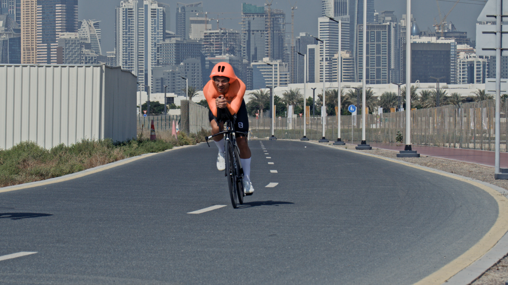
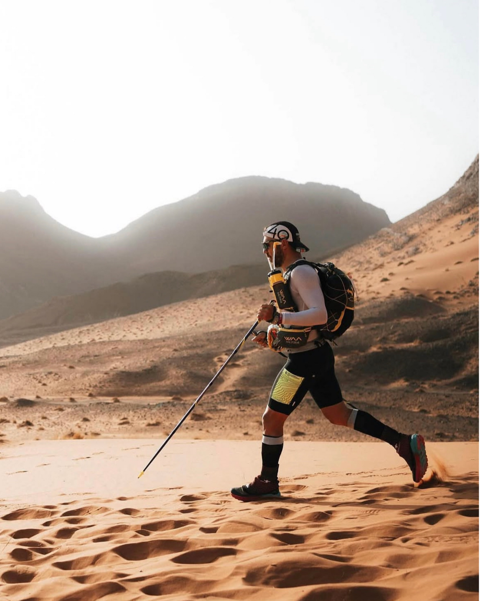
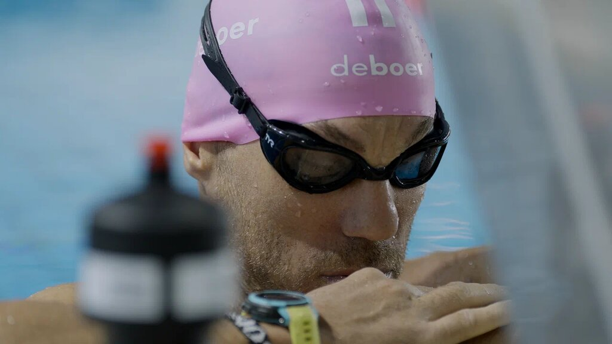

Today
Special stage
333km
By December 1:333 km
I’m going to live in Moscow

With each stage, we’ll share a story from Viktor Doronin’s life. We begin with his decision to move to Moscow after leaving school.
On the night of my school graduation party, I spent my time with my friends’ mothers. The lads had asked me to keep them company so they could be with the girls. Their parents trusted me, so I sat and chatted with them.
When I got home that morning, Mum was still up. I asked why she hadn’t gone to bed. She reminded me that I’d promised to tell her after the party what I was going to do next.
I told her: “I’m going to live in Moscow.”
She immediately asked what she should pack for me.
For me, that was the most valuable part of how my parents brought me up: they gave me room to choose. Of course we had rules, and I knew the boundaries. But I made my own decisions and took responsibility for myself.
December 2026
Five special stages build from 333 to 1111 km. Base stages in between cover 333 km a day; the last two cover 338 km. The three longest rides continue without overnight sleep or being split into daily sections.
The distances below are the planned stages of the challenge.
Today
Special stage
333km
By December 1:333 km
I’m going to live in MoscowBase stages
333km a day
By December 6:1998 km
Special stage
555km
By December 7:2553 km
Base stages
333km a day
By December 12:4218 km
Special stage
One continuous ride
777km
By December 14:4995 km
Base stages
333km a day
By December 19:6660 km
Special stage
One continuous ride
999km
By December 21:7659 km
Base stages
333km a day
By December 26:9324 km
Base stages
338km a day
By December 28:10,000 km
Special stage
One continuous ride
1111km
By December 30:11,111 km
Project finish
Recording the final result
By December 31:11,111 km

About Viktor
47. He doesn’t craft an image — he lives it.
A driving force behind the Dusty Dumbbells and Gastrodinamika communities, a friend, a source of motivation and one of the strongest amateur triathletes.
Documentary · 2024

In December 2024, Viktor swam 10 km, cycled 1001 km and ran 100 km — in 58 hours without sleep. The film follows the challenge from the inside and the people alongside him.
Watch the film VK Video · opens in a new tabViktor’s Strava records from December 24–26, 2024 document the distances of all three legs. The film “1111” tells the story of completing them without sleep.
Viktor completed the 38th Marathon des Sables: 252.8 km in 34:07:29, placing 81st overall.
Viktor has crossed the finish line at the IRONMAN World Championship in Kona four times: in 2016, 2017, 2018 and 2024.
Double Everesting means twice the height of Everest: 17,696 metres of elevation gain in a single ride. Viktor started in Krasnaya Polyana on October 10, 2021 at 23:50; Strava recorded 17,758 metres of elevation gain.
The 11,111 km distance is a separate cycling project. Its calendar plan is published above.

Dubai · 1001 km · 24–26 December 2024
From the film “1111”0.0 km≈
Not his first limit
Interviews
Conversations that reveal his experience of long-distance challenges, work on himself, and ability to bring people together through movement.
For partners
Not an integration.
A shared journey.
You can support the December project with equipment, technology or media. The team can discuss a format for your involvement.
View counts checked September 9, 2026
The five episodes have 233k, 239k, 231k, 231k and 273k views; the film has 92.8k. VK Video’s rounded counters add up to approximately 1.3M views.
Communication results from Project “1111”, as reported by the project team.
Ways to participate
The product becomes part of the daily distance and is shown honestly at work.
Data, connectivity and monitoring make all 31 days legible to the audience.
Together, we document the project as it unfolds and shape it into one coherent media story.
We’ll discuss your goals and agree on the format, resources, content and how to measure the outcome.
Contact Anna Nesterova